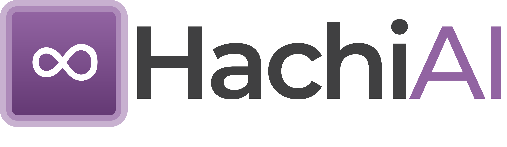

What Is Included In The Installer
- The HachiAi desktop application
- Electron runtime
- Required application dependencies
- Branding assets and installer resources
No separate Node.js, npm, Electron, or extra dependency installation is required.

This guide explains how to install the application, launch it for the first time, start and stop recordings, edit guides, annotate screenshots, export documents, and save finished workflows.
The dashboard is the main home screen of the tool. It shows saved guides, a button to create a new recording, and options to reopen or delete existing guides.
The floating recording bar stays visible while capture is active so the user can control recording quickly.
Once recording stops, the tool converts captured actions into a structured guide with screenshots, step descriptions, application context, and editing options.
Result: A complete guide is created and opened in the editor for refinement.
The guide title can be edited directly inside the editor screen. The title area supports long names and wraps across lines.
Every recorded step can be updated from the editor. Step descriptions are editable and support wrapped multi-line text.
Each step screenshot can be edited to highlight important areas or hide sensitive information.
After editing the title, steps, and screenshots, save the guide so it stays available on the dashboard.
The editor includes export options so the guide can be shared in different formats.
Tip: Finalize the guide title and step text before exporting so the document looks professional.